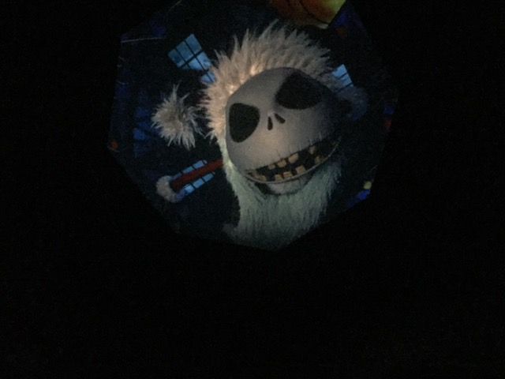
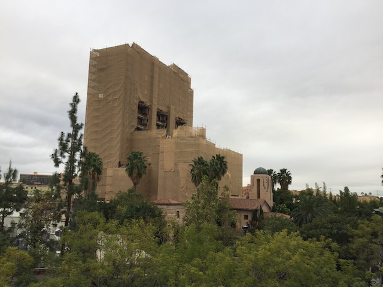

| |
Incrediblecoasters Winter 2016
Knotts Berry Farm Six Flags Magic Mountain Disneyland Resort
All right. And finally, we checked out the Disneyland Resort for Christmas Time, as this is pretty much the one time we visit now. And hey look! Matterhorn and Big Thunder Mtn in the same shot. Surprised I just noticed this.
And of course, it's raining. Hey, it may not have made the park dead like back in 2010, but it DEFINETLY helped with the crowds. Also, California has really been getting a lot of rain recently. This is great not only to help with our f*cking drought, but it should make for a surprisingly good cliff jumping season in 2017.
Love that the Christmas Tree is essentially as big as all the buildings on Main Street.
 Well, Buzz Lightyear always has a short line. We can always start out with that.
Well, Buzz Lightyear always has a short line. We can always start out with that.
Come out and play Buzz. We're not going to shoot you. =)
Not bad (at least by my standards. I suck at shooting dark rides!).
Hey look. It's Hyperspace Mountain again. I'm assuming they're doing this so that they can cash in on Rouge One (Not a bad movie, but far from the best Star Wars movie).
Look Disney. I get that you want to do new things. It's fun to experiment with rides. And Hyperspace Mountain was fun the first time. But please change it back to normal Space Mountain. In Hyperspace Mountain, you can see the track at times, and it sort of reveals itself as the coaster it really is. The normal soundtrack gives a sensation of speed and zooming around space while Hyperspace Mountain is focused too much on cramming in Star Wars that you start to notice what the ride would be like naked and outside.
It appears that we've run into a Space Ocean (Yes. That is a real thing).
I found the castle! YAY!!!
Hey. A ride on Matterhorn sounds good to me.
It may be the first modern steel coaster, but it's still running really good.
If you're ever at the Disneyland Resort, you have to do Indiana Jones. No excuses. It's just an awesome ride.
 Ooh! Jungle Cruise!
Ooh! Jungle Cruise!
I found the parking structure! =)
Deep in Critter Country, our Woodland Animal Friends are about to have themselves a Woodland Critters Christmas. >=)
One bright side of all this rain. Nobody in line for Splash Mountain.
Still my favorite water ride.
Disney, you might want to dispatch less logs. I know that's weird to say. But if you're this clogged up, it might be a smart idea to unclog.
Yeah. We're idiots for riding this. But this shouldn't be too surprising, given that we live in Idiotland.
Hey. It's Christmas time. Haunted Mansion is all decked out with Nightmare Before Christmas theming. =)

HAPPY HALLOWEEN...I MEAN MERRY CHRISTMAS!!! FOR I AM THE PUMPKIN KING...I MEAN SANTA!!!
"It's just what I always wanted! *bark*"
Tsk tsk tsk. So many people to put on the naughty list.
Sorry folks. Big Thunder Mtn is closed.
Psst. Hey Orlando. Given recent national tragedies, you might want to consider getting a clone of Great Moments with Mr. Lincoln for Main Street in the Magic Kingdom. Hint Hint.
The Disneyland Resort does indeed have two parks, and we visit both of them when we visit.
Incrediblecoasters Tradition of eating here.
You know, I've never ordered a steak here. And yeah. It's really good.
All right. Let's go over and check out Soaring Over California.
Huh. There's something different about the Soaring logo.
Wait. Why are we over South America? What does this have to do with California?
 OK. I can't keep it up anymore. Over the summer, California Adventure actually changed it to Soaring Around the World. Now I TOTALLY understand why they did this at Epcot, considering how that park is themed to all around the world. It makes sense for it to be Soaring Around the World. But this is California Adventure. Soaring Over California works here. But I went in with an open mind (and didn't spoil the ride), and I'm going to be honest. I absolutely LOVED Soaring around the World. It hits me right in the travel bone. I love all the places they showcase. I want to see them all. I absolutely love it. A major improvement. So glad they changed it. Sorry Disney Purists. This one is better.
OK. I can't keep it up anymore. Over the summer, California Adventure actually changed it to Soaring Around the World. Now I TOTALLY understand why they did this at Epcot, considering how that park is themed to all around the world. It makes sense for it to be Soaring Around the World. But this is California Adventure. Soaring Over California works here. But I went in with an open mind (and didn't spoil the ride), and I'm going to be honest. I absolutely LOVED Soaring around the World. It hits me right in the travel bone. I love all the places they showcase. I want to see them all. I absolutely love it. A major improvement. So glad they changed it. Sorry Disney Purists. This one is better.
Now don't get me wrong. I did enjoy Soaring Over California. I did like it (Always good to ride a simulator showcasing you around where you live). But don't worry. You can still essentially ride Soaring Over California from your home. It was a simulator. And the movement wasn't that much. Though yeah. It is a bummer you can't get the orange smell (speaking of which, the smells on Soaring around the World are GREAT!! You smell grass at Mt. Kilimanjaro, Jasmine at the Taj Mahal, and ocean scent at Fiji).
Christmas Parade from the DCA Trolley.
Yes. Disney acknowledges Kwanzaa. Now go bitch and cry about your stupid "War on Christmas".
"YAY!!! NO LINE FOR CALIFORNIA SREAMIN!!! Wait, what?"
Yeah. It's too good to be true. It's closed. But at least they're testing it.
 Of course, Toy Story Mania had to close on us halfway after waiting in line. Grr. Joy. >=(
Of course, Toy Story Mania had to close on us halfway after waiting in line. Grr. Joy. >=(
Hey. We may not be huge show people, but we will check it out when Disney comes out with a new show. So of course, we had to see their new Frozen show, which finally replaced their Aladdin show.
In good news, the Frozen show is good. Very damn good. But sorry. It's not as good as the Aladdin Show.
But hey. That's not to diss on the Frozen show. It's really good. Honestly, it just shows how good the Aladdin show was. I mean, look at our Top 10 Theme Park Shows List.
"SHE TURNED OUR KINGDOM INTO ICE!!! WITCH!!!"
 OK. One flaw with the show that I really didn't like. Sven talks in the play. I don't like that. I like that Sven doesn't talk. I love the Disney animals that don't talk. I know that you make changes when adapting a movie into a play. But making Sven talk is not a necessary change.
OK. One flaw with the show that I really didn't like. Sven talks in the play. I don't like that. I like that Sven doesn't talk. I love the Disney animals that don't talk. I know that you make changes when adapting a movie into a play. But making Sven talk is not a necessary change.
Hi Olaf puppeteer.
Psst. The secret is sisterly love. That's what thaws everything.
Yeah. The Frozen show may have its flaws and may not be as good as the Aladdin show, but it's still a good show that I enjoyed seeing.

OK. We have to ride and talk about Tower of Terror. Because if you haven't heard already (get out from under that rock), they're turning Tower of Terror into Guardians of the Galaxy. Uh...WHAT!!? Look. I know people will scream at Disney for changes they make to their attractions. I was neutral about them turning Maelstrom into Frozen at Epcot (I actually did ride Maelstrom. I just never got photos or put it in the update), and you just heard me rave about Soaring Around the World and praise Disney for that change. I don't have too much of a problem with the changes the park was doing while other people were complaining and bitching. But honestly, this is where I draw the line. I HATE the Guardians of the Galaxy makeover. It just seems...random. No wait, scratch that. It's not random. It's a cash grab because Guardians of the Galaxy is big now. It feels like it's going to be dated soon. I feel like they're just thinking about the short term conjunction and collaberation of the Guardians of the Galaxy Vol. 2 being released in May. The design, while I will admit, it looks kind of cool. But I just don't see it fitting in. It sticks out like a sore thumb and doesn't work for Hollywood AT ALL!!! And besides, The Twilight Zone > Guardians of the Galaxy. But on the bright side. It's just in California. Orlandos is staying the same (THANK GOD!!), and since the Paris one was a clone of the California one, now the Paris one will actually be unique.
Well, time for us to get our last ride on Tower of Terror. Oh, and warning. You're going to see a ton of Tower of Terror shots coming up.
"The little girl is missing her doll. We should return it to her."
Step right up! Gather one! Gather all! Come get your last ride in on Tower of Terror!
"I DO NOT APPROVE OF THIS GUARDIANS OF THE GALAXY MAKEOVER!! I STRIKE IT DOWN!!"
The shock of this decision by Disney is quite electrifying to these poor souls.
"Tonight's episode of the Twilight Zone is somewhat unique. For tonight, we'll be telling you about the strange tale of a group of misfit bounty hunters, who are forced to save the universe after one bounty hunter steals an orb and realizes just how much of a threat it is to the galaxy".
OK. There was something off about Tower of Terror. It seems like they stripped away a lot of the effects. They didn't have the mirror effect, they didn't have the stuff in the hallway, and they didn't even have the music during the dropping, which really does make a difference. Apparently there was a sign telling guests this that I didn't see and nobody bothered to tell me about *ahem ahem*.
So long Tower of Terror. I really enjoyed riding you. Well, at least you still exist in Paris now. Plus, the much better Orlando version is still here.
Hmm. I wonder why we came back to Paradise Pier.
Yeah. California Screamin opened back up. We had to ride it.
How to turn any ordinary tree into a Christmas Tree. Just add lights.
Meh. It may not be anything special, but pretzals are always good.
Yeah. We rode Small World since its all decked up for the holidays.
Look at the pretty lights.
OK. I know its become a cliche at this point to declare 2016 the worst year ever. And yeah. I hate to just repeat what everyone else is saying. But it's true. 2016 is the worst year in a longass time. Even if you exclude the celebrity deaths and the rise of fascism, and only focused on personal sh*t, it'd still be the worst year ever. But sorry to all the people clamoring for 2017. It's not going to get better. So yeah. We really shouldn't be celebrating 2017. We need to fix that right there.
There. That's much better.
Love all the dreamcatchers they have up there.
Disneyland Castle at night.
And of course, we have to close out the year with Big Thunder Mountain.
Oh joy. Just what we needed. More Vekoma rides. ;)
Big Thunder Mtn Goat has seen the news and has lived through 2016 and simply can't take it anymore. Honestly, I can't blame him. I'd join him, except I have Incrediblecoasters to run.
 And we conclude this update with a bang. We hoped you enjoyed this 3 part update showcasing all the So-Cal parks for the holidays and enjoy what the site has to offer for 2017.
And we conclude this update with a bang. We hoped you enjoyed this 3 part update showcasing all the So-Cal parks for the holidays and enjoy what the site has to offer for 2017.
Home
|